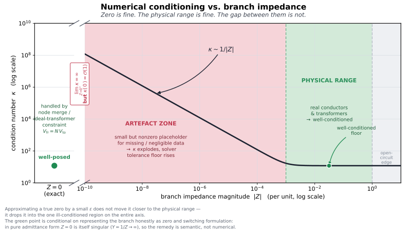

OPF engine: scope & status
BMOPFTools ships one reference optimizer: a nonconvex four-wire rectangular current–voltage optimal power flow engine (see its formulation principles), in a package extension that activates when JuMP and Ipopt are loaded. It is not a general OPF framework, and it is deliberately the smaller half of the project. As the positioning page puts it, the product is the model and the tooling around it, not the solver; the bounds & feasibility series is written to be formulation-agnostic precisely because the benchmarks are meant to be solved by many engines, not just this one.
This page sets the bar for contributions to the engine and the modeling conventions a new constraint or element should follow.
The correctness bar
The engine exists to validate cases and profile solutions, so its first obligation is correctness, not features. The mathematical models and methods are established, not exploratory:
- The formulation is fully derived in
docs/math-model.tex. - Feasibility / correctness is checked, not assumed: see
solve_feasibility_opfand the relaxed power-flow cross-check against OpenDSSDirect in the test suite. - The bounds & feasibility series documents why a given bound/objective combination is well-posed (or not), and Validating the OPF is the practical checklist.
The expectation for a new formulation, constraint, or element is therefore:
- It is mathematically established — cite the model (the math-model document, the spec, or the literature), don't invent physics in the solver.
- It is validated against a known-good reference — a power-flow comparison against OpenDSSDirect, an analytic case, or an existing benchmark with a known solution. A constraint that only "looks right" is not enough; the feasibility/correctness of the model is the thing being benchmarked.
It is not in scope to accumulate every state-of-the-art formulation here so they can be compared through BMOPFTools. That is not what this engine is for. The Task Force's role is to navigate towards a workable, broad spec — a common, faithful representation that can serve as the basis for your own bespoke extensions and formulations, which you build in your own code or framework. If a piece of that work later becomes accepted practice, it can be folded back in here (via the spec and the migration path). Until then, the engine stays small and correct rather than broad.
Modeling preferences
New constraints should stay consistent with how the engine is built. A few preferences in particular:
- Current limits over power limits. Branch and thermal ratings are already current-based (
i_max). For device injections, limits are still mostly power-based (p_max/q_max/s_max), with the IBR current limiti_maxan optional add-on — so this is a preferred direction, not a description of the whole engine. A current bound stays linear or quadratic in the rectangular IVR variables and avoids bilinear power expressions, so new injection constraints should prefer a current form where practical. (This mirrors the Tier-3 note in the style guide.) - Impedance over admittance, for series elements. Series elements (lines, transformer windings) are represented with impedance
R + jX, not admittanceG + jB. The reason is the lossless limit: asR → 0the impedance form stays finite, whereas an admittance form blows up (G → ∞) for a lossless branch. Keeping series elements in impedance form preserves the capability to build lossless models. Shunts and the transformer no-load branch are naturally admittances (a lossless shunt is pureB, with no blow-up) and stay inG + jBform — there is no tension there. - Put valid bounds on current variables where possible/reasonable. The current variables are first-class in an IVR formulation, and giving them sound bounds tightens the feasible region and helps the solver. Where a defensible current bound exists (a conductor ampacity, a converter limit), prefer to state it on the current variable directly.
- Bounds are largely optional — do not infer one from another. Many, if not all, of the bounds in the data model are optional, and different formulations activate different subsets (see Optimal power flow). So you cannot assume that the presence of, say, a power bound lets you derive a current bound: the case may carry one, both, or neither, by design. Stamp a constraint only from data that is actually present; never synthesise a missing bound from an unrelated one.
Zero impedance: represent it as is, don't approximate it
The impedance-over-admittance choice has a sharp practical corollary for near-zero branches (jumpers, bus ties, idealised regulators, placeholder transformer leakage). The temptation is to model "approximately zero" impedance as a small number ε. That is the worst option on the whole axis:

Z = 0exactly is well-conditioned — the engine handles it semantically, by merging the nodes / imposing the ideal-transformer constraintV_fr = N·V_to, rather than inverting a near-singular admittance.- The physical range (real conductors and transformers) is well-conditioned.
- The gap between them is the only ill-conditioned region on the axis. A small
εplaceholder lands you exactly there, where the condition number grows like1/|Z|and the solver's effective tolerance floor rises with it.
So lim_{Z→0⁺} κ = ∞ while κ(0) = O(1): approximating a true zero by a small value moves it away from the well-conditioned point, not toward the physical range. In pure admittance form this is unavoidable — Y = 1/Z → ∞ at Z = 0 — which is the same reason series elements are kept in impedance form. The remedy is semantic, not numerical: represent the branch as zero and switch formulation. BMOPFTools' fix_case does exactly this — collapsing low-impedance lines to switches (pass 4) and snapping placeholder transformer leakage to exact zero (pass 9) — and the zero-voltage / ill-conditioning traps page catalogues what happens when this is gotten wrong.
Extending the engine without forking it
The "not a model zoo" stance above is only tenable because the engine is extensible from outside: a downstream package can add devices, swap the objective, couple time steps, or pose an entirely different problem — reusing all the device physics, per-unit handling, and result extraction — without a new constraint landing in ext/BMOPFOpfExt/. Three seams, in increasing order of reach (full detail under extending the formulation):
model_hook!(ctx)/solution_hook!(ctx, result)— add custom variables, constraints, or objective terms to a single solve, then read their solved values. A hook device stamps its current withadd_terminal_injection!and may register its net injection asresult["custom_injection"]so the power-balance check inprofile_solutionstays honest. This is how a battery, EV charger, or bespoke limit is added without touching the JSON spec.- The staged API (
build_opf_model→enforce_kcl!→extract_result, withgeneration_costfor the objective) — unfuses build/solve/extract so several snapshots share one JuMP model. This is what makes inter-temporal coupling (battery state of charge across a horizon) expressible, which the single-shotsolve_opfcannot do; see the staged API. - A different problem specification entirely. Because
build_opf_modeladds operational limits only where the net declares them, a bounds-free net yields a pure physics model with free voltages; withadd_objective=falseand amodel_hook!objective this hosts state estimation, parameter estimation, and other model-fitting problems that are not dispatch optimisation. See Beyond OPF.
Internally the same seam is the build! recipe (build_opf!, build_pf!, build_feasibility!): a fourth problem type is a fourth recipe over the invariant _build_and_solve pipeline. Promoting that recipe entry point to a public build_custom_model is the natural step if such a formulation graduates from a downstream experiment to accepted practice — the same "fold it back in via the spec" path the model-zoo warning describes. Until then, the public hooks and staged API let you build it in your own package.
Authoring a model_hook!
A model_hook!(ctx) runs after the standard build (_add_device_constraints! has already stamped every element in the net and populated the KCL accumulators) and before enforce_kcl! turns those accumulators into constraints. Two conventions trip up first-time hook authors.
Hooks are additive. A hook may add current with add_terminal_injection!, add variables and constraints, and set the objective. It cannot replace a constraint already stamped for a network element — by the time the hook runs, that element's Ohm's-law/KCL contribution is already in the model. There are therefore two ways to make an element's parameter a decision variable:
Native free variable — preferred where it exists. Some element parameters are already exposed as optional free variables when the case declares bounds. A transformer tap is the worked example: set
tap_min/tap_maxon the transformer, retrieve the effective from→to ratio withopf_object(ctx, opf_transformer_tap_key(tid)), and let the engine thread it through the per-unit-correct, base-referred winding constraints. The hook just reads (and, across a staged multi-snapshot build, couples) the handle — the engine keeps ownership of per-unit, limits, and native loss/flow bookkeeping.Use a coefficient provider, or omit-and-re-stamp when no native location exists. Native scalar line
R_series/X_seriesmatrix entries can now be supplied by typed coefficient providers without replacing the branch. If the quantity has no provider-aware native location (for example a line's length), omit that element from the net and re-stamp its constraint in the hook with your own variable, injecting its current into the KCL accumulators. The caveats are the flip side of the above: for that element you now own the per-unit scaling (opf_bases(ctx)), any current/power limit, and native loss/flow bookkeeping — none of it is applied for an element the engine never saw.
Terminal injections are positive into the terminal. enforce_kcl! sets the sum at each (bus, terminal) to zero. So a series element from bus f to bus g carrying current I = cr + j·ci in the f → g direction subtracts at its from-terminal (current leaves f) and adds at its to-terminal (current enters g):
# series element f → g on conductor c, current I = cr + j·ci
add_terminal_injection!(ctx, f, c, -cr, -ci)
add_terminal_injection!(ctx, g, c, cr, ci)A shunt or user injection I into (bus, phase), referenced to the bus neutral, adds at the phase terminal and subtracts the return at the neutral:
add_terminal_injection!(ctx, bus, phase, cr, ci)
add_terminal_injection!(ctx, bus, neutral, -cr, -ci)The native flow/loss ledger uses the same "into bus" sign, so an element's complex loss is S_loss = −Σ V·conj(I_into_bus). In per-unit mode (per_unit=true, the default) the accumulator currents are per-unit; a SI current/voltage literal in a hook must be scaled by the matching opf_bases(ctx) base.
Keep it behind the extension boundary
The reference optimizer may eventually be extracted into a separate package, leaving BMOPFTools focused on the data model, conversion, analysis, and profiling. To keep that option open:
- Keep the engine behind the existing extension boundary — it lives in
ext/BMOPFOpfExt/, withJuMPandIpoptas weak dependencies (see the[weakdeps]/[extensions]blocks inProject.toml). - Do not couple core analysis to the engine. Parsing, validation, analysis, reporting, conversion, and augmentation must all work without JuMP/Ipopt loaded. Anything that needs the solver belongs in the extension, not in
src/.
See also
- Optimal power flow — running the engine and the formulation.
- Parameterized and differentiable extensions — the stable downstream-extension contract, scientific scope, native coverage, and known limitations.
- OPF result dictionary — the result-dict shape (part of the public API; see Versioning).
- Validating the OPF and Bounds & feasibility — the correctness machinery.